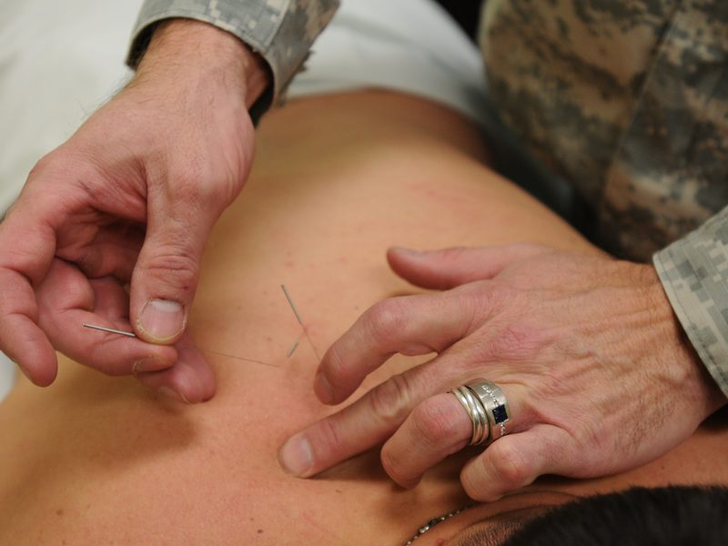
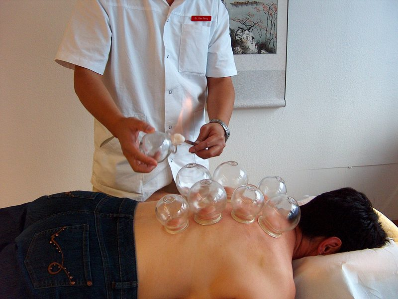
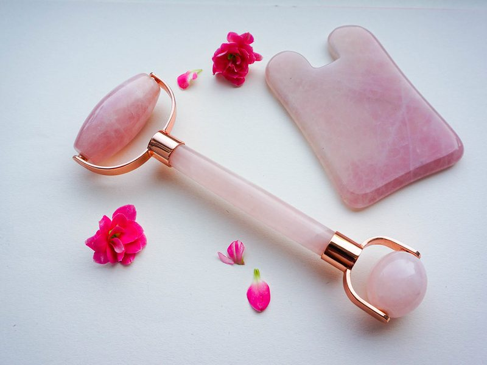
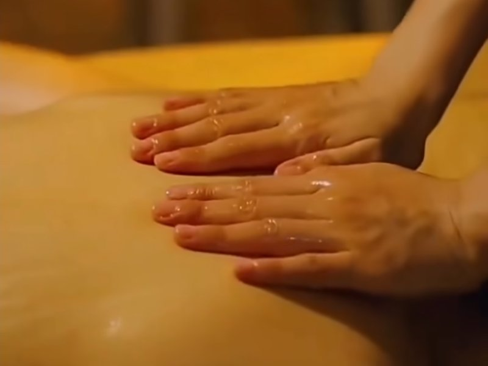
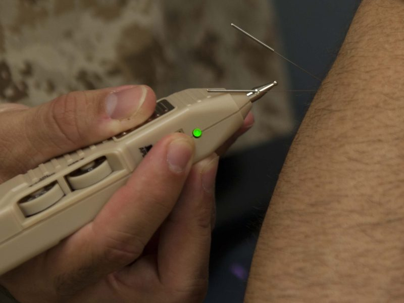
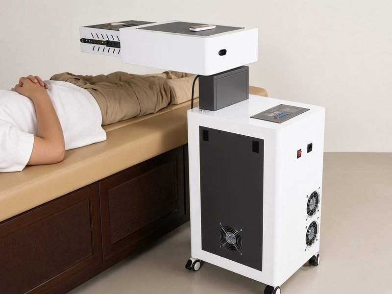

Services
Acupuncture

Fine needles are gently inserted at specific points along the body's meridians to support the smooth flow of qi and restore balance.
Other therapies

Cupping
Cups are placed on the skin to create gentle suction. This helps improve blood flow, ease muscle tightness and support the movement of qi.

Gua Sha
A smooth tool is lightly stroked across the skin to release muscle tension, encourage circulation and help reduce discomfort.

Chinese massage
Focused massage techniques are used along the meridians to relax muscles, improve movement and help the body return to balance.

Electro acupuncture
A gentle electrical current is applied to the needles to increase the effect of treatment and support relief from pain.

Moxibustion
A traditional Chinese medicine technique that uses the warmth of burning moxa near selected acupuncture points.
I use a wheeled moxibustion machine with nine moxa positions, automatic ignition and an adjustable treatment head. A wireless remote lets me position and operate it during your session.
- Book now
Initial Appointment
Consultation included – acupuncture, cupping, Gua Sha, massage or electro acupuncture
- Book now
Follow-up Appointment
Continuing care tailored to your progress
- Book now
Cosmetic Initial
Natural facial rejuvenation – first visit
- Book now
Cosmetic Follow-up
Ongoing cosmetic treatment
Prices in Australian dollars. Initial appointments $130. Follow-up appointments $100.
Health insurance
I accept private health insurance cards from most major health funds. Claim your rebate on the spot with your health fund card (HICAPS). Rebates depend on your fund and level of extras cover.
You can also read more in my article on acupuncture and private health insurance in Australia.
- Bupa
- Medibank
- HCF
- nib
- ahm
- HICAPS
Representative photos, not taken at this clinic: Gua Sha by Relax Photos (CC BY 2.0, cropped); electro acupuncture by Cpl. Paul Peterson, U.S. Marine Corps (public domain).